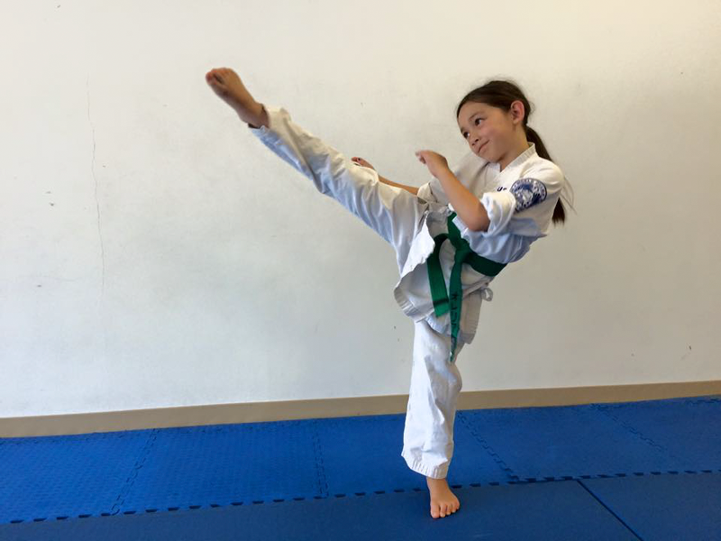

You’ll learn the same basic techniques and katas our style has practiced since it was founded 33 years ago—and how to apply them to sparring.
Deep Mastery
As the ancient masters did before us, we teach kicks and punches first. Only then can you deeply understand the blocks they require.
Full Contact
You’ll practice each technique with contact, against a resisting opponent. This way, you’ll know your technique doesn’t just look good. It actually works.
State-of-the-art Dojo
Newly opened in the spring of 2018, our TK square foot dojo is equipped with traditional weapons, training equipment, and full showers.

Learn from a 5th Degree Black Belt
Shihan Dai Takahashi has 40+ years of experience in full contact karate
"We all train hard and expect each other to train hard. We are not competing with each other, but we compete with ourselves to be the very best we can be. We help and push each other to succeed. The only thing you need to do is show up and just sweat! We will take care of the rest."
Shihan Dai Takahashi
4.8 on Facebook. Over 100 reviews.
Our students are proud of the place they train—and of the people they become.
"I've trained at five dojos across the country, and Shihan is the best instructor I've had the privilege to learn from. I leave each class feeling accomplished, because I know I'm pushing my body, and I can feel my technique getting sharper."
Dan M.
“Great traditional Japanese karate dojo with a first rate master instructor. Tough training and very high standards, but a wonderful, friendly place for the entire family to learn one of the most effective martial arts in the world.”
Mark D.
"Even though I never used to think of myself as a full-contact fighter, I feel safe and welcome here. Now, I can pick up a fighting stance in front of anyone—no gloves, no helmet, and no fear—and, honestly, it makes me feel like a badass."
Lisa S.